Matbiips example: Switching stochastic volatility with estimation of static parameters
In this example, we consider the Markov switching stochastic volatility model with parameter estimation.
Reference: C.M. Carvalho and H.F. Lopes. Simulation-based sequential analysis of Markov switching stochastic volatility models. Computational Statistics and Data analysis (2007) 4526-4542.
Contents
Statistical model
Let 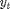 be the response variable and 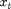 the unobserved log-volatility of . The stochastic volatility model is defined as follows for 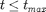
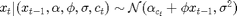
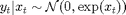
The regime variables 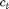 follow a two-state Markov process with transition probabilities
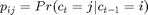
We assume the following priors over the parameters 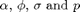:
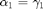
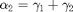
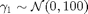
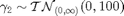
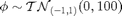
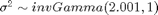
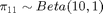
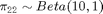
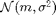 denotes the normal distribution of mean 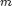 and variance 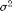. 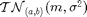 denotes the truncated normal distribution of mean and variance .
Statistical model in BUGS language
Content of the file 'switch_stoch_volatility_param.bug':
model_file = 'switch_stoch_volatility_param.bug'; % BUGS model filename type(model_file);
# Switching Stochastic Volatility Model
# Reference: C.M. Carvalho and H.F. Lopes. Simulation-based sequential analysis of Markov switching
# stochastic volatility models. Computational Statistics and Data analysis (2007) 4526-4542.
var y[t_max],x[t_max],prec_y[t_max],mu[t_max],mu_true[t_max],alpha[2],gamma[2],c[t_max],c_true[t_max],pi[2,2]
data
{
c_true[1] ~ dcat(pi_true[1,])
mu_true[1] <- alpha_true[1] * (c_true[1]==1) + alpha_true[2]*(c_true[1]==2)
x_true[1] ~ dnorm(mu_true[1], 1/sigma_true^2) T(-500,500)
prec_y_true[1] <- exp(-x_true[1])
y[1] ~ dnorm(0, prec_y_true[1])
for (t in 2:t_max)
{
c_true[t] ~ dcat(ifelse(c_true[t-1]==1,pi_true[1,],pi_true[2,]))
mu_true[t] <- alpha_true[1] * (c_true[t]==1) + alpha_true[2] * (c_true[t]==2) + phi_true * x_true[t-1];
x_true[t] ~ dnorm(mu_true[t], 1/sigma_true^2) T(-500,500)
prec_y_true[t] <- exp(-x_true[t])
y[t] ~ dnorm(0, prec_y_true[t])
}
}
model
{
gamma[1] ~ dnorm(0, 1/100)
gamma[2] ~ dnorm(0, 1/100) T(0,)
alpha[1] <- gamma[1]
alpha[2] <- gamma[1] + gamma[2]
phi ~ dnorm(0, 1/100) T(-1,1)
tau ~ dgamma(2.001, 1)
sigma <- 1/sqrt(tau)
pi[1,1] ~ dbeta(10, 1)
pi[1,2] <- 1 - pi[1,1]
pi[2,2] ~ dbeta(10, 1)
pi[2,1] <- 1 - pi[2,2]
c[1] ~ dcat(pi[1,])
mu[1] <- alpha[1] * (c[1]==1) + alpha[2] * (c[1]==2)
x[1] ~ dnorm(mu[1], 1/sigma^2) T(-500,500)
prec_y[1] <- exp(-x[1])
y[1] ~ dnorm(0, prec_y[1])
for (t in 2:t_max)
{
c[t] ~ dcat(ifelse(c[t-1]==1, pi[1,], pi[2,]))
mu[t] <- alpha[1] * (c[t]==1) + alpha[2] * (c[t]==2) + phi * x[t-1]
x[t] ~ dnorm(mu[t], 1/sigma^2) T(-500,500)
prec_y[t] <- exp(-x[t])
y[t] ~ dnorm(0, prec_y[t])
}
}
Installation of Matbiips
- Download the latest version of Matbiips
- Unzip the archive in some folder
- Add the Matbiips folder to the Matlab search path
matbiips_path = '../../matbiips';
addpath(matbiips_path)
General settings
set(0, 'DefaultAxesFontsize', 16); set(0, 'Defaultlinelinewidth', 2); set(0, 'DefaultLineMarkerSize', 8); light_blue = [.7, .7, 1]; light_red = [1, .7, .7]; light_green = [.7, 1, .7]; light_gray = [.9,.9,.9]; % Set the random numbers generator seed for reproducibility if isoctave() || verLessThan('matlab', '7.12') rand('state', 0) else rng('default') end
Load model and load or simulate data
sample_data = true; % Simulated data or SP500 data t_max = 100; if ~sample_data % Load the data T = readtable('SP500.csv', 'delimiter', ';'); y = diff(log(T.Close(end:-1:1))); SP500_date_str = T.Date(end:-1:2); ind = 1:t_max; y = y(ind); SP500_date_str = SP500_date_str(ind); SP500_date_num = datenum(SP500_date_str); end
Model parameters
if ~sample_data data = struct('t_max', t_max, 'y', y); else sigma_true = .4; alpha_true = [-2.5; -1]; phi_true = .5; pi11 = .9; pi22 = .9; pi_true = [pi11, 1-pi11; 1-pi22, pi22]; data = struct('t_max', t_max, 'sigma_true', sigma_true,... 'alpha_true', alpha_true, 'phi_true', phi_true, 'pi_true', pi_true); end
Compile BUGS model and sample data if simulated data
model = biips_model(model_file, data, 'sample_data', sample_data);
data = model.data;
Plot the data
figure('name', 'Log-returns') if sample_data plot(1:t_max, data.y) title('Observed data') xlabel('Time') else plot(SP500_date_num, data.y) title('Observed data: S&P 500') datetick('x', 'mmmyyyy', 'keepticks') xlabel('Date') end ylabel('Log-return') box off saveas(gca, 'switch_stoch_param_obs', 'epsc2') saveas(gca, 'switch_stoch_param_obs', 'png')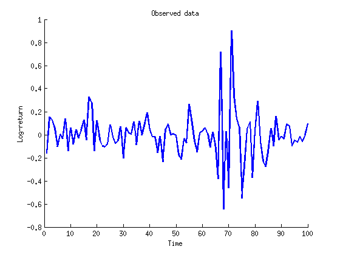
Biips Particle Marginal Metropolis-Hastings
We now use Biips to run a Particle Marginal Metropolis-Hastings in order to obtain posterior MCMC samples of the parameters 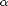, 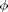, 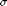, 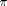, and of the variables 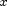. Note: We use below a reduced number of MCMC iterations to have reasonable running times. But the obtained samples are obviously very correlated, and the number of iterations should be set to a higher value, and proper convergence tests should be used.
Parameters of the PMMH
n_burn = 2000; % nb of burn-in/adaptation iterations n_iter = 40000; % nb of iterations after burn-in thin = 10; % thinning of MCMC outputs n_part = 50; % nb of particles for the SMC param_names = {'gamma[1]', 'gamma[2]', 'phi', 'tau', 'pi[1,1]', 'pi[2,2]'}; % name of the variables updated with MCMC (others are updated with SMC) latent_names = {'x', 'c', 'alpha[1]', 'alpha[2]', 'sigma'}; % name of the variables updated with SMC and that need to be monitored
Init PMMH
inits = {-1, 1, .5, 10, .8, .8};
obj_pmmh = biips_pmmh_init(model, param_names, 'inits', inits, 'latent_names', latent_names); % creates a pmmh object
* Initializing PMMH
Run PMMH
obj_pmmh = biips_pmmh_update(obj_pmmh, n_burn, n_part); % adaptation and burn-in iterations [obj_pmmh, out_pmmh, log_marg_like_pen, log_marg_like] =... biips_pmmh_samples(obj_pmmh, n_iter, n_part, 'thin', thin); % Samples
* Adapting PMMH with 50 particles |--------------------------------------------------| 100% |++++++++++++++++++++++++++++++++++++++++++++++++++| 2000 iterations in 149.60 s * Generating 4000 PMMH samples with 50 particles |--------------------------------------------------| 100% |**************************************************| 40000 iterations in 2815.84 s
Penalized marginal log-likelihood
figure('name', 'PMMH: Penalized marginal log-likelihood') iter = thin:thin:n_iter; plot(iter, log_marg_like_pen, 'linewidth', 1) xlabel('Iteration') ylabel('Penalized marginal log-likelihood') box off saveas(gca, 'switch_stoch_param_pmll', 'epsc2') saveas(gca, 'switch_stoch_param_pmll', 'png')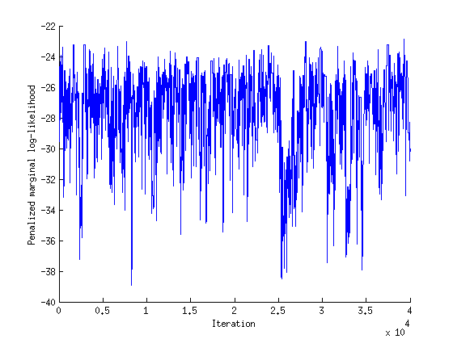
Marginal log-likelihood
figure('name', 'PMMH: Marginal log-likelihood') iter = thin:thin:n_iter; plot(iter, log_marg_like, 'linewidth', 1) xlabel('Iteration') ylabel('Marginal log-likelihood') box off saveas(gca, 'switch_stoch_param_mll', 'epsc2') saveas(gca, 'switch_stoch_param_mll', 'png')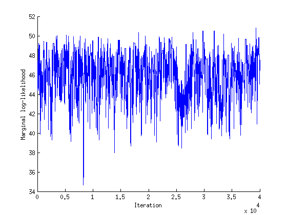
Some summary statistics
summ_pmmh = biips_summary(out_pmmh, 'probs', [.025, .975]);
Compute kernel density estimates
kde_pmmh = biips_density(out_pmmh);
Compute probability mass function estimates of the discrete marginal variables c[t]
table_c = biips_table(out_pmmh.c);
param_plot = {'alpha[1]', 'alpha[2]', 'phi', 'sigma', 'pi[1,1]', 'pi[2,2]'};
param_lab = {'\alpha_1', '\alpha_2', '\phi', '\sigma', '\pi_{11}', '\pi_{22}'};
if sample_data
param_true = [alpha_true', phi_true, sigma_true, pi11, pi22];
end
Posterior mean, MAP and credible interval of the parameters
[~, ind_map] = max(log_marg_like_pen); [~, ind_mle] = max(log_marg_like); for i=1:numel(param_plot) summ_param = getfield(summ_pmmh, param_plot{i}); out_param = getfield(out_pmmh, param_plot{i}); fprintf('Posterior mean of %s: %.3f\n', param_plot{i}, summ_param.mean); fprintf('95%% credible interval of %s: [%.3f, %.3f]\n',... param_plot{i}, summ_param.quant{1}, summ_param.quant{2}); fprintf('MAP of %s: %.3f\n', param_plot{i}, out_param(ind_map)); fprintf('MLE of %s: %.3f\n', param_plot{i}, out_param(ind_mle)); end
Posterior mean of alpha[1]: -2.979 95% credible interval of alpha[1]: [-4.934, -1.073] MAP of alpha[1]: -4.143 MLE of alpha[1]: -4.143 Posterior mean of alpha[2]: -1.431 95% credible interval of alpha[2]: [-2.755, -0.036] MAP of alpha[2]: -2.004 MLE of alpha[2]: -2.004 Posterior mean of phi: 0.358 95% credible interval of phi: [-0.093, 0.786] MAP of phi: 0.125 MLE of phi: 0.125 Posterior mean of sigma: 0.803 95% credible interval of sigma: [0.485, 1.202] MAP of sigma: 0.803 MLE of sigma: 0.803 Posterior mean of pi[1,1]: 0.961 95% credible interval of pi[1,1]: [0.833, 0.998] MAP of pi[1,1]: 0.991 MLE of pi[1,1]: 0.991 Posterior mean of pi[2,2]: 0.911 95% credible interval of pi[2,2]: [0.744, 0.994] MAP of pi[2,2]: 0.949 MLE of pi[2,2]: 0.949
Trace of MCMC samples for the parameters
for k=1:numel(param_plot) figure('name', 'PMMH: Trace samples parameter') samples_param = getfield(out_pmmh, param_plot{k}); plot(samples_param, 'linewidth', 1) if sample_data hold on plot(0, param_true(k), '*g', 'linewidth', 3, 'markersize', 16); end xlabel('Iteration', 'fontsize', 24) ylabel(param_lab{k}, 'fontsize', 24) box off % title(param_lab{k}) saveas(gca, ['switch_stoch_param_trace', num2str(k)], 'epsc2') saveas(gca, ['switch_stoch_param_trace', num2str(k)], 'png') end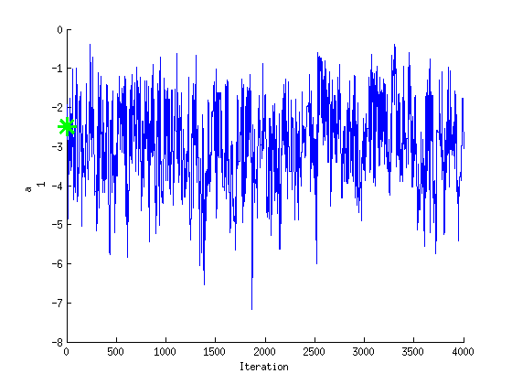 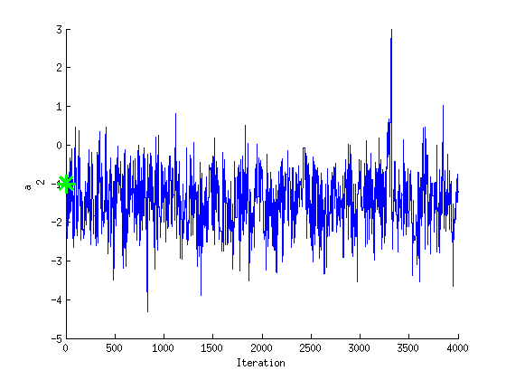 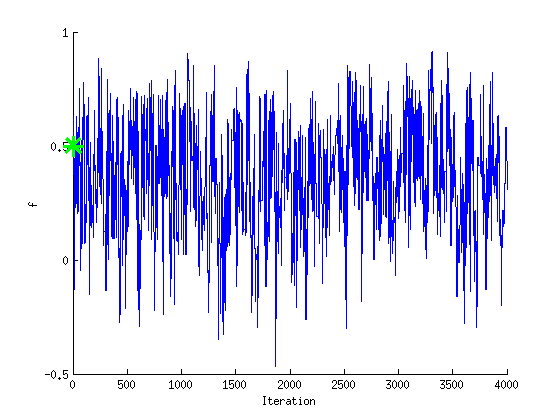
 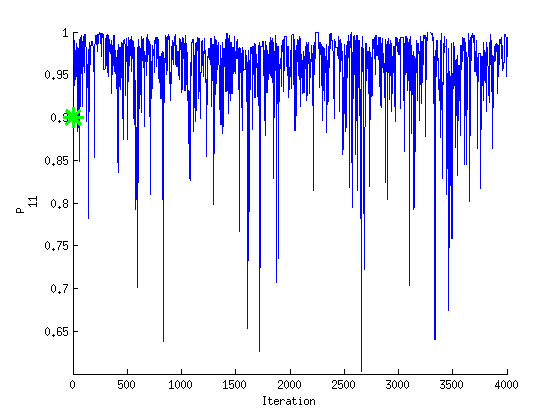 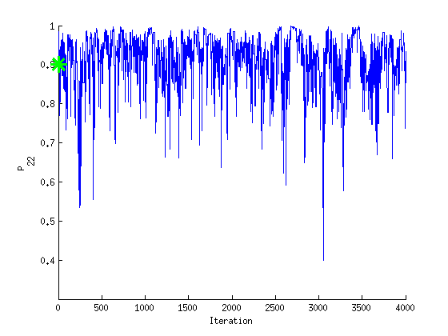
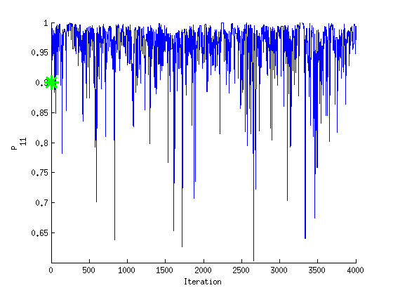 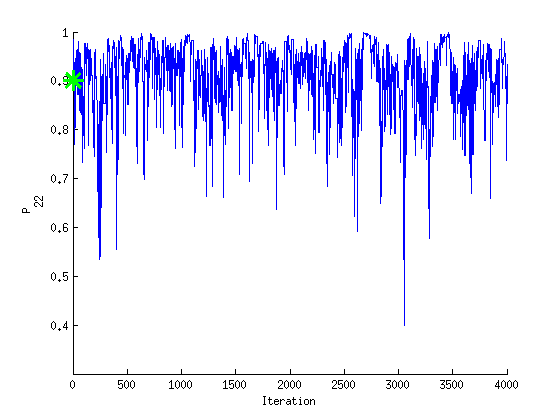 Histogram and KDE estimate of the posterior for the parameters
for k=1:numel(param_plot) figure('name', 'PMMH: Histogram posterior parameter') samples_param = getfield(out_pmmh, param_plot{k}); hist(samples_param, 15) h = findobj(gca, 'Type', 'patch'); set(h, 'EdgeColor', 'w', 'FaceColor', 'r') if sample_data hold on plot(param_true(k), 0, '*g', 'linewidth', 3, 'markersize', 16); end xlabel(param_lab{k}, 'fontsize', 24) ylabel('Number of samples', 'fontsize', 24) box off % title(param_lab{k}) saveas(gca, ['switch_stoch_param', num2str(k)], 'epsc2') saveas(gca, ['switch_stoch_param', num2str(k)], 'png') end for k=1:numel(param_plot) figure('name', 'PMMH: KDE estimate posterior parameter') kde_param = getfield(kde_pmmh, param_plot{k}); plot(kde_param.x, kde_param.f, 'r') if sample_data hold on plot(param_true(k), 0, '*g', 'linewidth', 3, 'markersize', 16); end xlabel(param_lab{k}, 'fontsize', 24) ylabel('Posterior density', 'fontsize', 24) box off % title(param_lab{k}) saveas(gca, ['switch_stoch_param_kde', num2str(k)], 'epsc2') saveas(gca, ['switch_stoch_param_kde', num2str(k)], 'png') end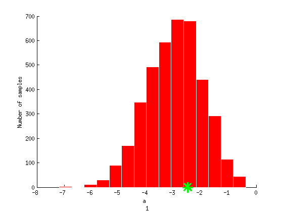 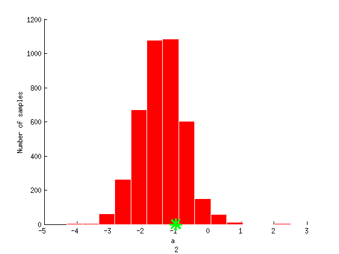 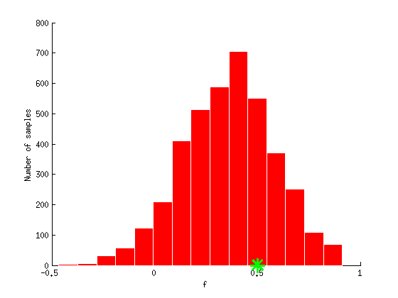 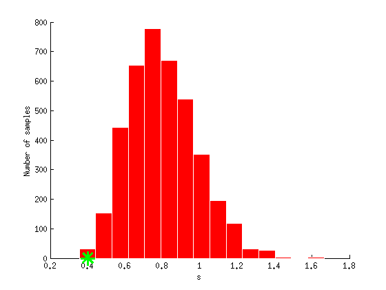 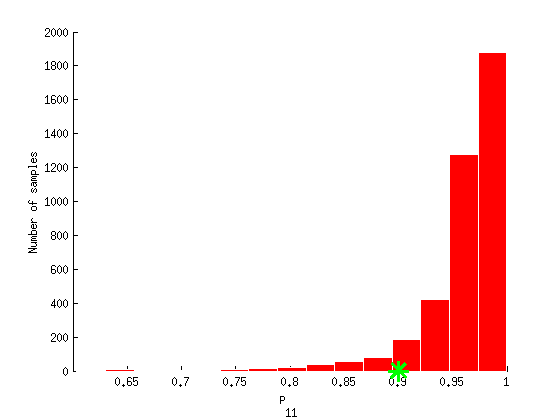 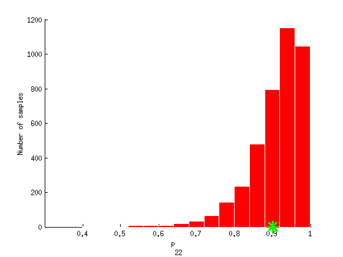 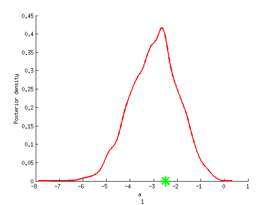 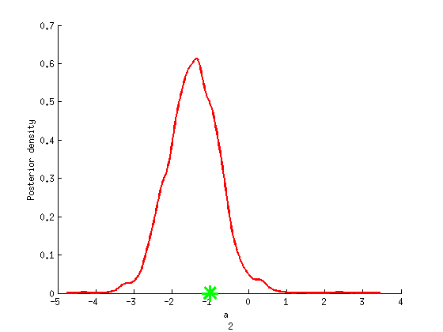 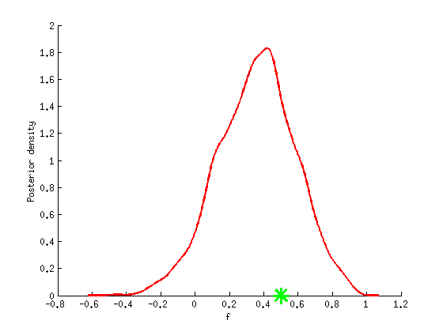 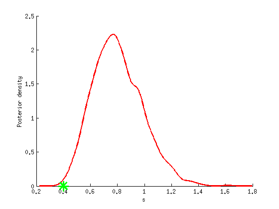 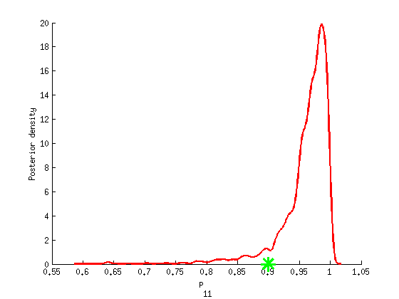 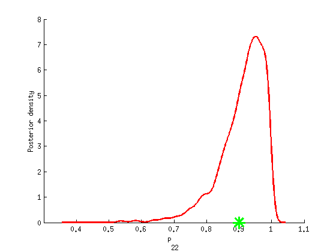
Posterior probability of c[t]=2
prob_c2 = zeros(1,t_max); figure('name', 'PMMH: Posterior probabilities of c[t]=2') hold on for t=1:t_max if data.c_true(t)==2 h = fill([t-1,t,t,t-1], [0,0,1,1], 0); set(h, 'edgecolor', 'none', 'facecolor', light_green) set(get(get(h,'Annotation'),'LegendInformation'),'IconDisplayStyle','off') end ind = find(table_c(t).x == 2); if isempty(ind) prob_c2(t) = 1-sum(table_c(t).f); else prob_c2(t) = table_c(t).f(ind); end end set(get(get(h,'Annotation'),'LegendInformation'),'IconDisplayStyle','on') plot(1:t_max, prob_c2, 'r') xlabel('Time') ylabel('Posterior probability') legend({'True c_t=2 intervals', 'PMMH estimate of Pr(c_t=2)'},... 'Location', 'NorthWest', 'EdgeColor', light_gray) saveas(gca, 'switch_stoch_param_c', 'epsc2') saveas(gca, 'switch_stoch_param_c', 'png')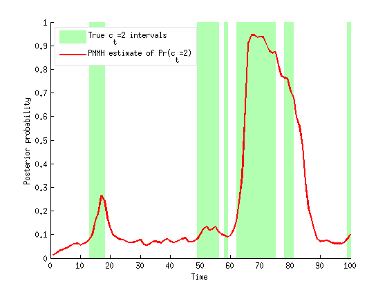
Posterior mean and quantiles for x
figure('name', 'PMMH: Posterior mean and quantiles') x_pmmh_mean = summ_pmmh.x.mean; x_pmmh_quant = summ_pmmh.x.quant; h = fill([1:t_max, t_max:-1:1], [x_pmmh_quant{1}; flipud(x_pmmh_quant{2})], 0); set(h, 'edgecolor', 'none', 'facecolor', light_red) hold on plot(1:t_max, x_pmmh_mean, 'r', 'linewidth', 3) if sample_data plot(1:t_max, data.x_true, 'g') legend({'95% credible interval', 'PMMH mean estimate', 'True value'}) else legend({'95% credible interval', 'PMMH mean estimate'}) end ylim([-6.5,1]) xlabel('Time') ylabel('Log-volatility') box off legend boxoff saveas(gca, 'switch_stoch_param_x', 'epsc2') saveas(gca, 'switch_stoch_param_x', 'png')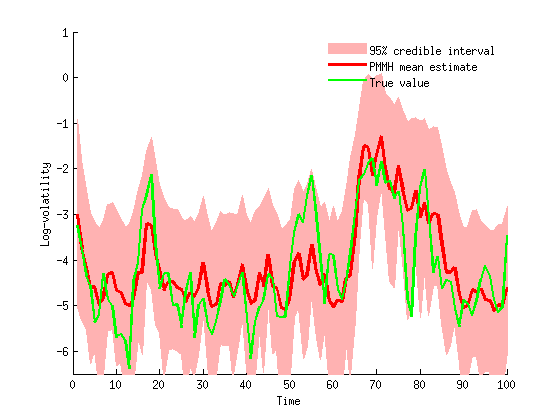
Trace of MCMC samples for x
figure('name', 'PMMH: Trace samples x') time_index = [5, 10, 15]; for k=1:numel(time_index) tk = time_index(k); subplot(2, 2, k) plot(out_pmmh.x(tk, :), 'linewidth', 1) if sample_data hold on plot(0, data.x_true(tk), '*g'); end ylim([-7,0]) xlabel('Iteration') ylabel(['x_{', num2str(tk), '}']) title(['t=', num2str(tk)]); box off end if sample_data h = legend({'PMMH samples', 'True value'}); set(h, 'position', [0.7, 0.25, .1, .1]) legend boxoff end saveas(gca, 'switch_stoch_param_x_trace', 'epsc2') saveas(gca, 'switch_stoch_param_x_trace', 'png')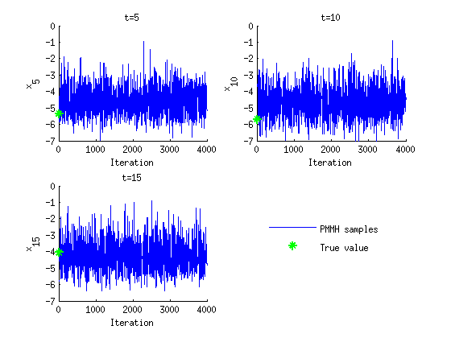
Histogram and kernel density estimate of posteriors of x
figure('name', 'PMMH: Histograms marginal posteriors') for k=1:numel(time_index) tk = time_index(k); subplot(2, 2, k) hist(out_pmmh.x(tk, :), 20); h = findobj(gca, 'Type', 'patch'); set(h, 'EdgeColor', 'w', 'FaceColor', 'r') if sample_data hold on plot(data.x_true(tk), 0, '*g'); end xlim([-7,0]) xlabel(['x_{', num2str(tk), '}']); ylabel('Number of samples'); title(['t=', num2str(tk)]); box off end if sample_data h = legend({'Posterior samples', 'True value'}); set(h, 'position', [0.7, 0.25, .1, .1]) legend boxoff end saveas(gca, 'switch_stoch_param_x_hist', 'epsc2') saveas(gca, 'switch_stoch_param_x_hist', 'png') figure('name', 'PMMH: KDE estimates marginal posteriors') for k=1:numel(time_index) tk = time_index(k); subplot(2, 2, k) plot(kde_pmmh.x(tk).x, kde_pmmh.x(tk).f, 'r'); if sample_data hold on plot(data.x_true(tk), 0, '*g'); end xlim([-7,0]) xlabel(['x_{', num2str(tk), '}']); ylabel('Posterior density'); title(['t=', num2str(tk)]); box off end if sample_data h = legend({'Posterior density', 'True value'}); set(h, 'position', [0.7, 0.25, .1, .1]) legend boxoff end saveas(gca, 'switch_stoch_param_x_kde', 'epsc2') saveas(gca, 'switch_stoch_param_x_kde', 'png')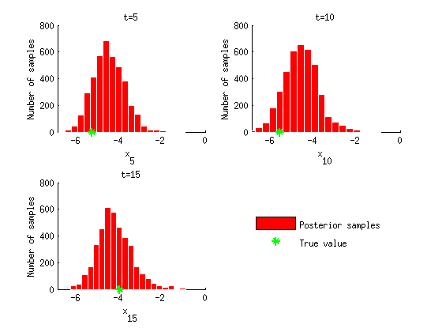 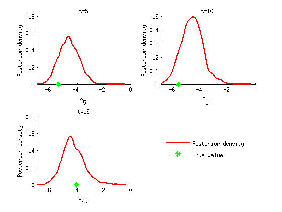
Clear model
biips_clear()
save switch_stoch_param_workspace.mat